Status report · Mage Master vertical slice · worktree feat/mage-master
Playable on the iPhone end to end; the night pass closed the visual majors the judges found. Two things are still unverified.
Energy → levels → three mages auto-fighting four stages → drops → win/lose → Rift pulls with odds → use/discard → Rift upgrade timer with gem skip → offline income → sandbox gem shop: all captured on the device. Not verified: a 30-minute device re-soak on the softened ramp, and a real (non-sandbox) purchase. Details, evidence paths and the decisions you own are below.
Where it stands
Loop on deviceVerified
Every design-doc loop element captured on the phone (evidence 01, 03, 04). Requirements audit: 32 of 36 MET, 4 PARTIAL, 0 MISSING.
Every design-doc loop element captured on the phone (evidence 01, 03, 04). Requirements audit: 32 of 36 MET, 4 PARTIAL, 0 MISSING.
Fidelity barJudged pass
Home, Rift, Mages, Battle passed the multi-model judge on 2026-09-02. Night pass fixed Victory, Shop, Settings, boss bar, top bar. Final re-judge of Shop, Settings and Victory: pass, pass, pass.
Home, Rift, Mages, Battle passed the multi-model judge on 2026-09-02. Night pass fixed Victory, Shop, Settings, boss bar, top bar. Final re-judge of Shop, Settings and Victory: pass, pass, pass.
Handover buildInstalled 10:31
Standalone build (bundled dist, no dev server) installed and launched on the phone; your existing save is intact (level 5, offline income claimed on the wood-framed Welcome Back card, capture 19). Two build traps fixed on the way: copied derived data pointing at the main checkout, and a locked keychain (errSecInternalComponent).
Standalone build (bundled dist, no dev server) installed and launched on the phone; your existing save is intact (level 5, offline income claimed on the wood-framed Welcome Back card, capture 19). Two build traps fixed on the way: copied derived data pointing at the main checkout, and a locked keychain (errSecInternalComponent).
Unverified2 items
30-minute device re-soak after the ramp retune (headless pacing test is green); on-device purchase tap (the DOM purchase test is green, the shop renders on device).
30-minute device re-soak after the ramp retune (headless pacing test is green); on-device purchase tap (the DOM purchase test is green, the shop renders on device).
Night pass — what the review captures found, and the fixes
| Finding | Cause | Fix | Evidence |
|---|---|---|---|
| Victory / Defeat buttons rendered as bare text | Runtime art variables were defaulted to none on .fab-ui; every kit root nested in the game root carries that class, so modal cards reset the inherited plate URL. | Defaults moved to :root only. Recorded as kit trap #3 in auto-memory. | 03 → 06, 15 |
| Boss health bar hidden behind the framed level strip | Phaser bar at canvas y≈40 under the DOM strip. | Bar is a DOM overlay at the arena top, driven per frame from the sim view. | 02 → 09 |
| Gold "12…" at four digits | Pills shrank unevenly; energy timer inline. | Equal-width pills, timer stacked under the value, counts ≥ 10 000 compact to "10.9k". | 13, 14 |
| Shop: price plates floating, dead wood below, one-copy-for-all | Kit grid layout with the plate outside the card. | Framed pack rows (art · name over copy · plate inside), per-pack copy, "Best value" badge inside the frame, rift scene under the packs. | 01 → 16 |
| Settings: flat kit page | Unstyled PageShell. | Painted camp scene under a scrim, one framed panel with the toggle rows and a full-width Reset plate. | 04 → 17 |
| Modal cards on the flat SVG plate | Kit card image. | Victory, Defeat, Pause and Reveal cards wear the painted wood 9-slice. | 15, 18 |
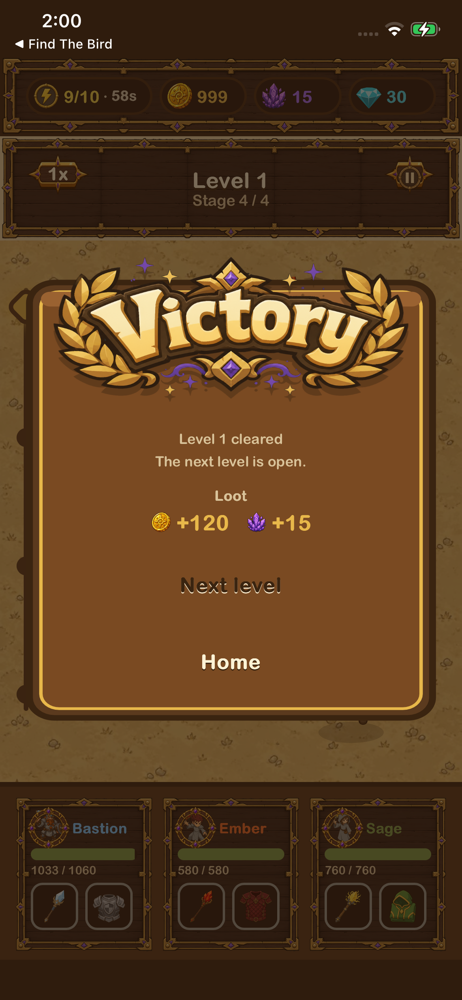
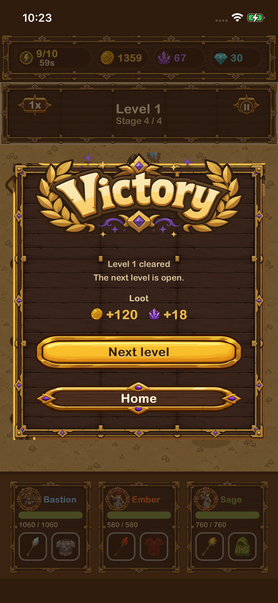
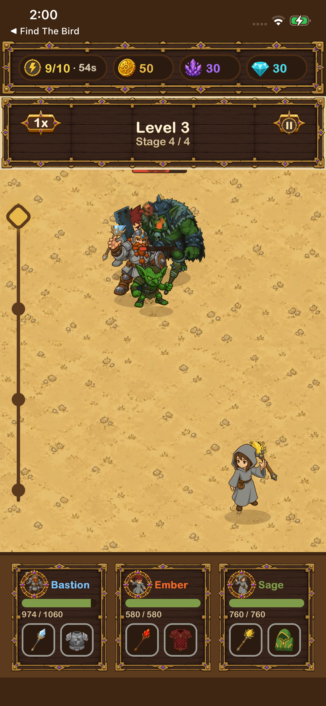
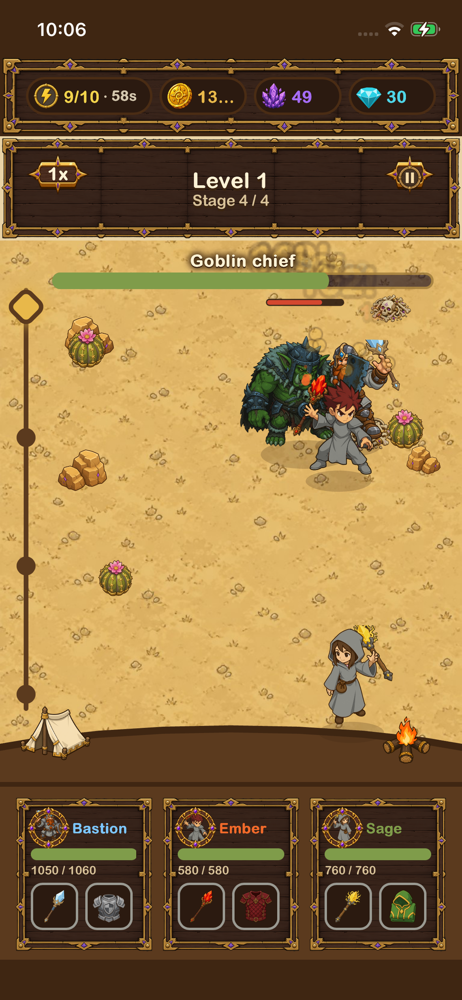
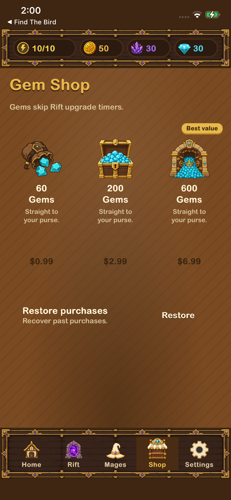
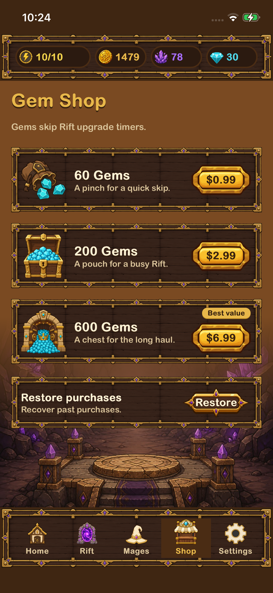
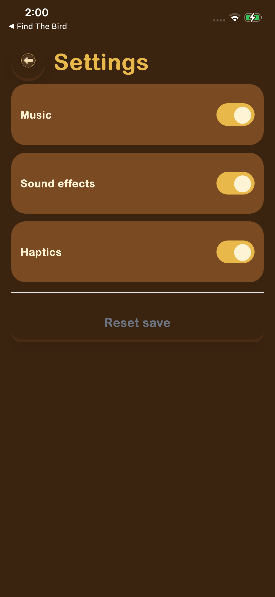
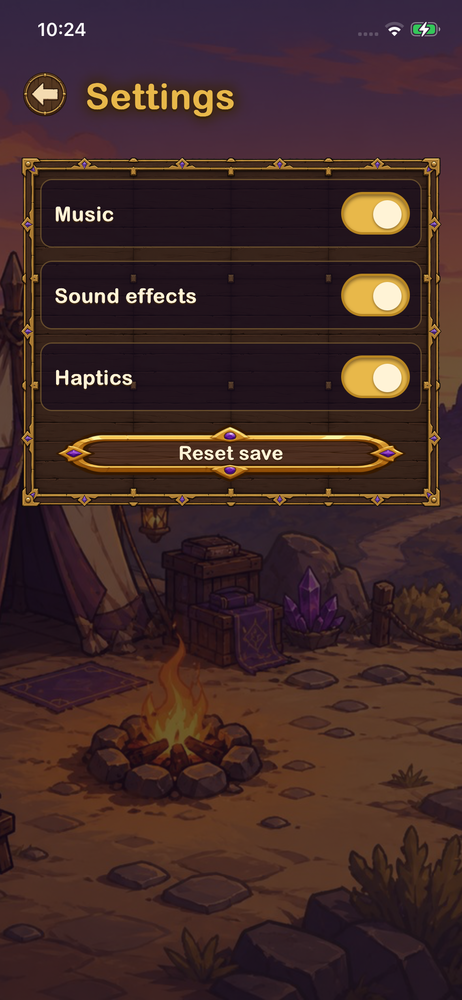
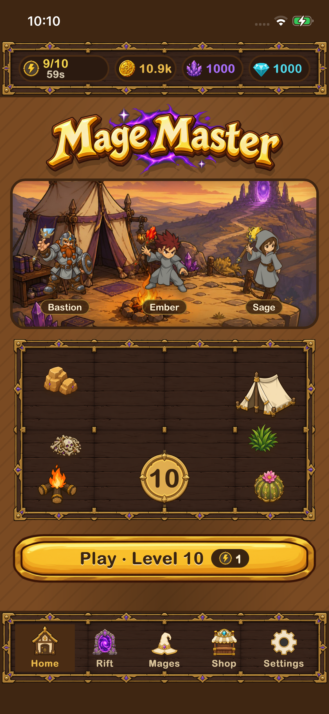
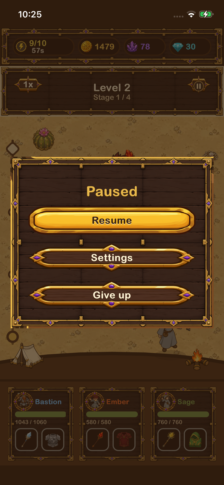
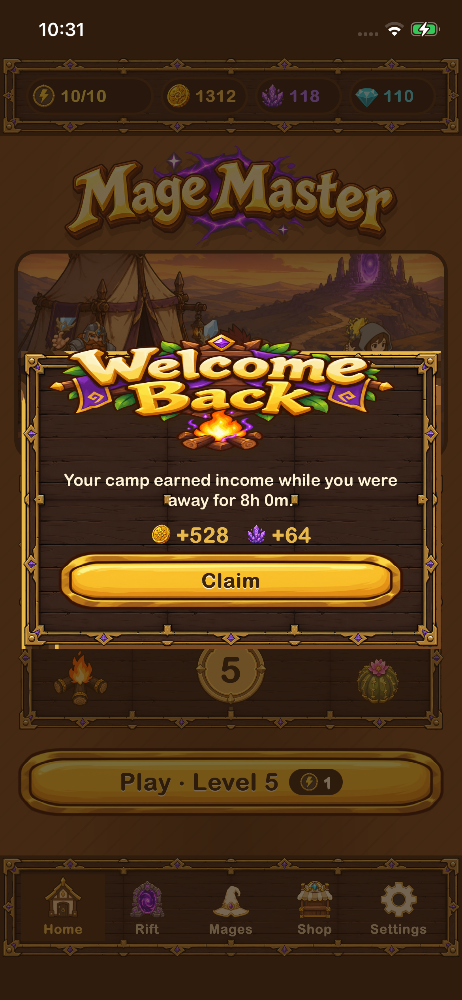
Judge trajectory (pixelsmith, multi-model consensus on device captures)
| Screen | Round | Verdict | Majors that drove the next fix |
|---|---|---|---|
| Shop | v1 (grid) | pass, 3 majors | truncated coin ×3 models, dead space below Restore, detached price plates |
| Shop | v2 (rows) | pass, 3 majors | copy wrapping, badge over the rail, flat top area |
| Settings | v1 (kit) | fail | reset width, empty lower half, flat background |
| Settings | v2 (scene + panel) | pass, 2 majors | panel sat too low, reset crowding |
| Victory | v1 | pass, 4 majors | flat card interior, truncated coin (already fixed), plate style mix (by design) |
| Boss fight | v1 | fail | melee mages overlap the boss body (sim separation, open), unframed boss bar; the truncated-coin majors are fixed |
| Shop | v3 (final) | pass | remaining notes are nits: flat badge, restore-button centering, scene seam |
| Settings | v3 (final) | pass | one contested major: the judge wanted a darker reset plate; kept the dark plate with gold rim for consistency with Home |
| Victory | v2 (wood frame) | pass | notes are by-design: paused units behind the card, gold vs dark plate hierarchy, card fills the width |
Open items — decisions and work you own
- Real purchases. The Gem shop runs on the SDK's sandbox provider (instant settle). RevenueCat + App Store products are a separate lane; the sandbox stays in until you say which store setup to use.
- Boss readability. Melee mages stand inside the boss silhouette during boss stages. Fix is in the sim's separation radius (boss-scaled), which touches melee reach; not attempted blind at 10:30.
- Re-soak. The 30-minute device soak was run before the ramp retune (level-6 wall found, then softened). The headless pacing bot passes on the shipped tuning; the device re-soak still needs a free phone for 30 minutes.
- Design-doc deviations kept (audit PARTIALs): defeat card offers Retry; armor substat pool includes a small ATK roll.
Where everything is
- Worktree
fabrikav2/.worktrees/mage-master, branchfeat/mage-master, commits05007f533(fidelity pass) →d2890da62(night fixes).mainuntouched. - Evidence:
games/mage_master/evidence/2026-09-02-01…05(slice, polish, soak, video, fidelity) and2026-09-03-06-night/(this pass, JOURNAL.md + judge JSON). - Docs:
docs/plans/2026-09-02-001-feat-mage-master-mvp-plan.md,games/mage_master/docs/{research,requirements-audit,brief}.md. - Device loop scripts:
tools/mage-master-dev/(install, dev install, drive, shot, soak, judge, record, trim/matte/garment). README inside. - Checks at handover: typecheck clean, 20 unit tests green (incl. the 30-minute pacing bot and the DOM purchase test), repo audit passing with token warnings only.
Suggested next actions
- Play the standalone build for 30 minutes on the phone; note where it stalls or feels dead.
- Decide the store lane for gems (RevenueCat vs StoreKit direct).
- Approve a sim pass on boss separation; I will capture a 15 fps burst before/after.